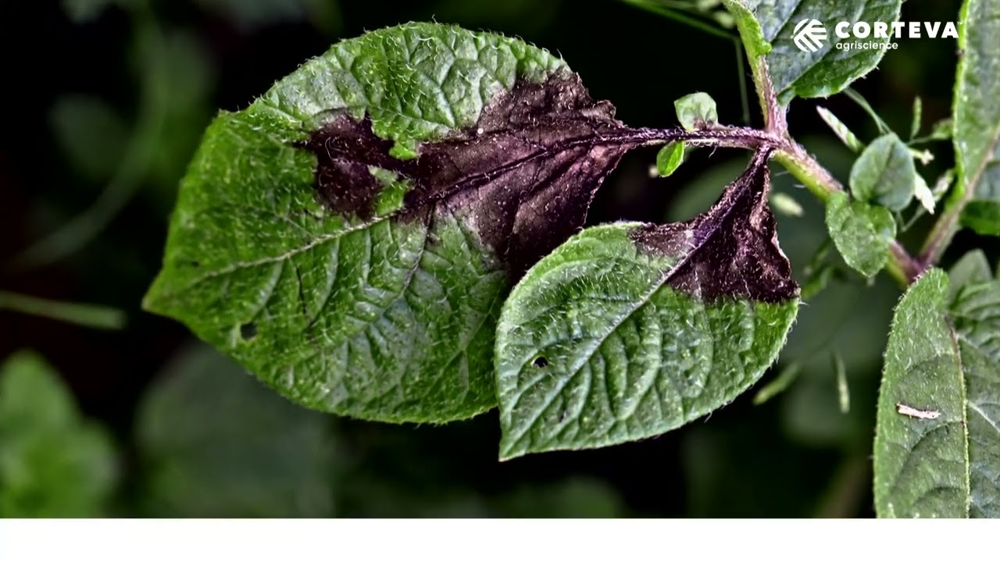
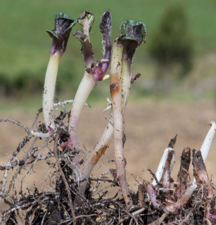

¿Conoces las enfermedades que dañan el cultivo de papa?
Acá te contamos las enfermedades más comunes dentro de la Provincia de Ubaté
Gota, tizón tardío o lancha negra
(Phytophthora infestans)

Es la enfermedad más destructiva que afecta a la papa. Este patógeno es capaz de atacar la planta en cualquier etapa de su desarrollo, comprometiendo hojas, tallos y, ocasionalmente, los tubérculos. Su gran peligro radica en la velocidad de dispersión, la cual es particularmente rápida en entornos donde la humedad es alta.
La proliferación de la Gota se ve impulsada por condiciones ambientales específicas que prevalecen en las zonas paperas andinas: alta humedad relativa junto con temperaturas moderadas, idealmente entre 18° y 22°C durante varias horas. Una vez que el hongo llega al cultivo, el proceso de infección puede iniciarse en tan solo 12 horas, pero los primeros síntomas visibles se manifiestan típicamente después de 5 a 7 días.
La infección comienza con la aparición de pequeñas lesiones de color marrón a negro en las hojas, las cuales tienen un aspecto húmedo y se expanden desde los bordes o la punta del folíolo hacia el centro. Frecuentemente, estas manchas están rodeadas por un halo de color amarillo o verde claro. En ambientes con alta humedad, se puede observar un crecimiento blanco y filamentoso en la parte inferior (envés) de las hojas, que es la manifestación de la esporulación del patógeno. Además, los tallos suelen presentar manchas distintivas de color café.
- Utilizar semillas sanas y preferiblemente variedades con cierto grado de tolerancia a la enfermedad.
- Asegurar la eliminación de residuos de cosechas previas (conocidos como "toyas"), ya que estos pueden albergar el patógeno e iniciar nuevas infecciones.
- Si se emplea el riego por aspersión, se debe evitar aplicarlo cerca del mediodía para prevenir que la combinación de humedad y alta temperatura favorezca la rápida dispersión de la enfermedad.
- Al surcar el terreno, es recomendable mantener un espaciamiento entre surcos no menor a un metro para mejorar la aireación y reducir la humedad dentro del dosel del cultivo.
- Implementar un control químico de forma preventiva, es decir, aplicar fungicidas antes de la aparición masiva de síntomas, especialmente cuando las condiciones climáticas son favorables para el desarrollo de la Gota.
Costra negra Rhizoctoniasis de la papa
(Rhizoctonia solani)

Esta enfermedad se identifica principalmente por la formación de
tubérculos deformes que presentan protuberancias y costras
superficiales de color negro, lo que reduce drásticamente su calidad
comercial. El hongo prospera óptimamente a una temperatura de
18°C, favorecido por un alto nivel de humedad tanto en
el suelo como en el ambiente.
A nivel de la planta, las lesiones se
manifiestan como manchas y chancros de color café-rojizo que atacan
los estolones o los brotes del tubérculo-semilla. Estas afectaciones
son graves, pues pueden llegar a causar la muerte de los puntos de
crecimiento de la papa.
- Se observan chancros (lesiones hundidas) que causan la deformación y la "decapitación" de los brotes y estolones jóvenes.
- En la base de las plantas, aparecen manchas oscuras que pueden estar cubiertas por una capa algodonosa de color blanco.
- Los tubérculos desarrollados presentan costras negras en su superficie.
- En ocasiones, se produce la formación de tubérculos aéreos (pequeñas papas formadas sobre el tallo).
- Se evidencia un retraso general en el crecimiento, con el ápice (punta de la planta) entorchado y el tejido leñoso sufriendo necrosis (muerte).
- Rotar el cultivo, de preferencia con cereales, por un período mínimo de tres años.
- Utilizar semillas sanas certificadas de excelente calidad, las cuales deben ser previamente tratadas con fungicidas.
- Realizar una siembra poco profunda para asegurar una emergencia rápida y minimizar el daño a los brotes nuevos.
- Eliminar los residuos de cosechas anteriores, en particular los tubérculos.
- Aplicar fungicidas en momentos clave: durante el almacenamiento, en la siembra y para la desinfección del suelo en el surco.